メニューバーでチェックボタン (check button) とラジオボタン (radio button) を使いましたが、これはメニューだけではなくウィジェットとしても用意されています。チェックボタンは Checkbutton() で生成し、ON / OFF のような二者択一の情報を設定するために使います。ラジオボタンは Radiobutton() で生成し、複数の値からひとつを選ぶ場合に使います。
Checkbutton() と Radiobutton() はオプション text でボタンの名前を指定します。Radiobutton() を使う場合は、選択する値をオプション value で指定し、その値を格納するオブジェクトをオプション variable で指定します。また、オプション command を設定することもできます。この場合、ボタンの値が更新されると指定した関数が実行されます。CheckButton() は値が ON /OFF の 2 通りしかないので、variable には BooleanVar のオブジェクトを指定するといいでしょう。
簡単なプログラムと実行例を示します。
リスト : チェックボタンとラジオボタン
from Tkinter import *
root = Tk()
root.option_add('*font', ('FixedSys', 14))
opts1 = BooleanVar()
opts1.set(True)
opts2 = BooleanVar()
opts2.set(False)
opts3 = BooleanVar()
opts3.set(True)
action = IntVar()
action.set(1)
Label(text ='Check Button').pack()
Checkbutton(text = 'option 1', variable = opts1).pack()
Checkbutton(text = 'option 2', variable = opts2).pack()
Checkbutton(text = 'option 3', variable = opts3).pack()
Label(text ='Radio Button').pack()
Radiobutton(text = 'action A', variable = action, value = 0).pack()
Radiobutton(text = 'action B', variable = action, value = 1).pack()
Radiobutton(text = 'action C', variable = action, value = 2).pack()
root.mainloop()
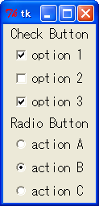 チェックボタンとラジオボタン
今度は画像の取り扱いについて説明しましょう。Tk は標準で GIF や PPM / PGM 形式の画像ファイルを扱うことができます。PPM はカラー、PGM はグレイスケールの画像を扱う、UNIX で標準的に用いられるベタフォーマットです。
Tkinter の場合、クラス Image を使って画像を取り扱います。具体的には Image のサブクラス BitmapImage が白黒のビットマップを表し、PhotoImage がカラーイメージを表します。そして、そのオブジェクトをラベルやボタンなどのウィジェットに使うことができます。たとえば、画像ファイルからイメージを作るには、次のように行います。
リスト：画像の表示 from Tkinter import * root = Tk() image1 = PhotoImage(file = 'earthris.gif') Label(root, image = image1).pack() root.mainloop()
PhotoImage() は画像を表すオブジェクトを返します。オプション file は読み込む画像ファイルを指定します。earthris.gif は Python/Tkinter の配布パッケージに含まれている画像ファイルです。なお、このプログラムでは earthris.gif がカレントディレクトリにあることを仮定しています。ファイルがカレントディレクトリにないとエラーが表示されて動作しません。earthris.gif をカレントディレクトリにコピーするか、ファイル名の指定にパスを追加してください。
生成した画像は、次のメソッドを利用することができます。
| type() | イメージの種別を返す |
| height() | イメージの高さを返す |
| weight() | イメージの幅を返す |
ラベルやボタンにイメージを表示するには、オプション image に画像のオブジェクトをセットします。image は PhotoImage() で作成した画像専用のオプションで、メソッド BitmapImage() で作成した画像はオプション bitmap にセットしてください。これでラベルにイメージが表示されます。
それでは簡単な例題として、GIF / PPM の画像を表示するプログラムを作ります。Tkinter にはファイルを選択するためのモジュール tkFileDialog が用意されています。いろいろな関数が用意されていますが、次の関数を使うのが一番簡単でしょう。
これらの関数を実行すると、ファイル選択のウィンドウ(ダイアログ)が開かれ、ウィンドウ上の操作でディレクトリをたどり、ファイルを選ぶことができます。使用できるオプションは次の通りです。
このなかで重要なオプションが filetypes です。アプリケーションで扱うことができるファイル種別を拡張子で指定し、そのファイルだけを表示します。指定はリストとタプルで行います。
filetypes = [ファイル種別, ... ] ファイル種別 := (名前, (拡張子, ...))
たとえば、GIF/PPM ファイルを指定する場合は、次のようになります。
filetypes = [('Image Files', ('.gif', '.ppm'))]
この場合は GIF と PPM ファイルが一緒に表示されます。次のように指定すると、表示するファイルをダイアログの操作で切り替えることができます。
filetypes = [('GIF Files', '.gif'),
('PPM Files', '.ppm'),
('ALL Files', '*')]
指定する拡張子がひとつしかない場合はタプルを使う必要はありません。すべてのファイルを表示する場合は * を使います。また、空文字列 '' を指定すると、拡張子のないファイルを表示します。ファイルを選択すると、ファイル名をフルパス形式で返します。選択しない（キャンセル）場合は、空文字列が返されます。
それでは、GIF / PPM 画像ローダーを作りましょう。まず、メニューとラベルを設定します。
リスト：GIF/PPM ローダー (1) from Tkinter import * from tkFileDialog import * import sys, os.path root = Tk() # グローバル変数 path_name = "" image_data = PhotoImage(width = 64, height = 64) # ラベル label = Label(root, image = image_data) label.pack() # メニュー m0 = Menu(root); root.configure(menu = m0); m1 = Menu(m0, tearoff = 0) m1.add_command(label = 'Open', under = 0, command = load_file) m1.add_separator m1.add_command(label = 'Exit', under = 0, command = sys.exit) m0.add_cascade(label = 'File', under = 0, menu = m1 ) root.mainloop()
メニュー File の下に、ファイルを選択する Open とアプリケーションを終了する Exit の 2 つのメニューを設定します。次に、イメージとグローバル変数を定義します。path_name は選択されたファイルのパスを格納しておきます。askopenfilename() にこのパスを指定することで、次にファイルを選ぶときは同じディレクトリから始めることができます。アプリケーションの開始時にはファイルは指定されていないので、空のイメージを作って表示しておきます。あとは、画像ファイルをロードする本体を作ります。
リスト：GIF/PPM ローダー(2)
# ファイルの選択
def load_file():
global image_data, path_name
filename = askopenfilename(filetypes = [('Image Files', ('.gif', '.ppm')),
('GIF Files', '.gif'),
('PPM Files', '.ppm')],
initialdir = path_name)
if filename != "":
path_name = os.path.dirname(filename)
image_data = PhotoImage(file = filename)
label.configure(image = image_data)
askopenfilename() でファイル名を取得したら、モジュール os.path の関数 dirname() でパスを取り出してグローバル変数 path_name にセットします。dirname() はファイル名からパス部分を取り出して返します。
ファイル名をゲットしたら、それが空文字列でないことを確認します。次に、新しいイメージを PhotoImage() で生成します。最後に、ラベルの configure() で表示するイメージを変更します。これで選択した画像ファイルを表示することができます。
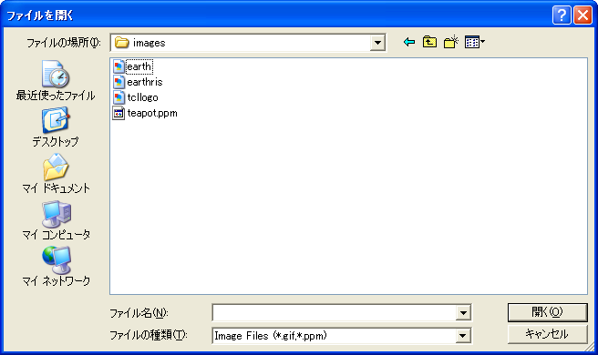 表示するファイルの選択
GUI アプリケーションの場合、ボタンを押すとかメニューを選ぶといった操作は、基本的にはユーザーが自由に行うことができます。ところが、ある操作をしないと次の処理に進めない場合があります。たとえば、画像を表示する場合、表示するファイル名をユーザーから入力してもらわないと、画像ファイルを表示することはできません。このときによく使われるのが ダイアログ (dialog) です。
前回はファイル選択を行う関数 askopenfilename() を使いましたが、このとき表示されたウィンドウがダイアログです。ダイアログは重要なメッセージを表示するために開かれるウィンドウで、画面の前面に表示され、ユーザーがダイアログに応答しないかぎり、そのアプリケーションではほかの操作を行うことはできません。
Tkinter の場合、モジュール tkMessageBox を使うと簡単にダイアログを表示することができます。tkMessageBox に用意されている関数を示します。
これらの関数を実行すると、メッセージを表示してユーザーがボタンを押すまで待ちます。オプション title でダイアログのタイトルを指定し、オプション message でダイアログに表示する文字列を指定します。これらの関数は押したボタンの種別を返します。簡単なプログラムを示します。
リスト：tkMessageBox のサンプル
from Tkinter import *
from tkMessageBox import *
root = Tk()
n = IntVar()
n.set(0)
func_table = (showinfo, showwarning, showerror, askquestion, askokcancel,
askyesno, askretrycancel)
name_table = ('showinfo', 'showwarning', 'showerror', 'askquestion',
'askokcancel', 'askyesno', 'askretrycancel')
def message_box():
func = func_table[n.get()]
func(title = 'about', message = u'message box のサンプルです')
for m, name in enumerate(name_table):
Radiobutton(root, text = name, value = m, variable = n).pack(anchor='w')
Button(root, text = "Open message box", command = message_box).pack()
root.mainloop()
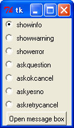 メインウィンドウの画像
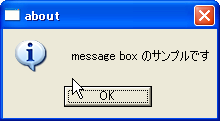 メッセージボックス showinfo()の画像
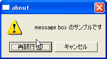 メッセージボックス askretrycancel() の画像
このほかに Tkinter には、ダイアログを生成するモジュール Dialog が用意されています。ダイアログは Dialog() で生成します。
Dialog(parent, options, ...)
Dialog() のオプションを表に示します。
| オプション | 機能 |
|---|---|
| title | ダイアログのタイトルを指定 |
| text | ダイアログに表示する文字列 |
| bitmap | ダイアログに表示するビットマップ |
| strings | ボタン名 (文字列) を格納したリスト |
| default | デフォルトボタンを指定 |
一般に、bitmap には Tk で用意されているビットマップを指定します。イメージを指定することはできないので注意してください。ボタンはいくつでも設定することができ、リストに格納した順番で表示されます。Dialog() は Dialog のオブジェクトを返します。その中のインスタンス変数 num に押されたボタンの番号がセットされています。
たとえば、strings に ['yes', 'no'] を指定した場合、ボタン yes を押すと 0 がセットされ、no を押すと 1 がセットされます。ただし、筆者が使用している Python/Tkinter (Python 2.4.2) では、no を押すと True がセットされます。ご注意ください。
それでは、Dialog() を使ってメッセージを表示してみましょう。
リスト：Dialog のサンプル
from Tkinter import *
import Dialog
root = Tk()
root.option_add('*font', ('FixedSys, 14'))
# ウィンドウの生成
def message_window():
# ダイアログの生成
Dialog.Dialog(root, title = 'About', bitmap = 'info',
text = u'Dialog のテストです',
strings = ['Yes', 'No'], default = 0)
# メニューの設定
m = Menu(root)
root.configure(menu = m)
m.add_command(label = 'About', under = 0, command = message_window)
# ラベルの設定
Label(root, text = u'メニュー About を選んでね').pack()
root.mainloop()
メニュー About が選択されたら、関数 message_window() を実行してダイアログを表示します。bitmap には info を指定しました。このほかに、error, hourglass, questhead, question, warning などがあります。ボタンは Yes と No のふたつです。default には 0 を指定したので、Yes のボタンがデフォルトになります。
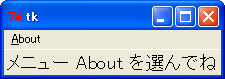 メインウィンドウの画像
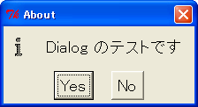 Dialog の画像
今度は図形を表示する キャンバス (canvas) ウィジェットを説明します。キャンバスは、矩形、直線、楕円などの図形のほかに、イメージ、文字列、任意のウィジェットを表示することができます。キャンバスウィジェットは Canvas() で生成します。次のプログラムを実行すると、空のウィンドウが表示されます。
リスト：キャンバスウィジェット from Tkinter import * root = Tk() c0 = Canvas(root, width = 150, height = 150) c0.pack() root.mainloop()
これで図形を表示するキャンバスをウィンドウに配置したことになります。また、キャンバスとスクロールバーを組み合わせて、表示範囲を変更することもできます。
キャンバスを配置しただけでは、なにも図形は描かれていません。図形を生成するには次表に示すメソッドを使います。
| create_line() | 直線（折れ線） |
| create_oval() | 楕円 |
| create_arc() | 円弧（楕円の円周の一部） |
| create_rectangle() | 矩形 |
| create_polygon() | 多角形 |
| create_image() | イメージ |
| create_bitmap() | ビットマップ |
| create_text() | 文字列 |
| create_window() | 任意のウィジェット |
それでは実際に図形を表示してみましょう。
リスト：楕円の描画 from Tkinter import * root = Tk() c0 = Canvas(root, width = 150, height = 150) id = c0.create_oval(10, 10, 140, 140) c0.pack() root.mainloop()
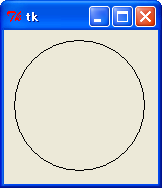 楕円の描画
ウィンドウに楕円が描画されました。楕円の場合、指定した矩形に内接するように描画されます。図形を描画するメソッドは、図形を表す番号 (ID) を返します。これを使って図形を操作することができます。ウィジェットのメソッド cget() や configure() に対応するのが、itemcget() と itemconfigure() です。たとえば、楕円の中を赤色に塗りつぶしてみましょう。次の 1 行を追加してください。
c0.itemconfigure(id, fill = 'red')
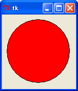 楕円の描画(塗りつぶし)
楕円の中が赤くなりました。よく使われるオプションには次のものがあります。
矩形も楕円と同じ指定方法です。stipple には、Tk に標準で組み込まれているビットマップを指定するのが一般的です。よく使うビットマップが灰色の模様を表す gray12, gray25, gray50, gray75 です。それでは実際に描画してみましょう。
リスト：矩形の描画 from Tkinter import * root = Tk() c0 = Canvas(root, width = 150, height = 150) c0.create_rectangle(10, 10, 140, 140, fill = 'green', stipple = 'gray25') c0.pack() root.mainloop()
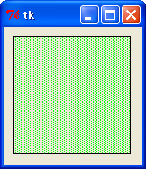 矩形の描画
次は直線です。2 点間だけではなく複数の点を指定すると、その間を直線で結びます。では、直線を描画してみましょう。
リスト：直線の描画 from Tkinter import * root = Tk() c0 = Canvas(root, width = 150, height = 150) c0.create_line(10, 10, 140, 10, 10, 140, 140, 140) c0.pack() root.mainloop()
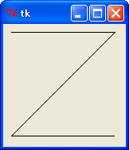 直線の描画
画面に Z 字型の線が描かれましたね。線の色を指定するオプションは、直線の場合は outline ではなくて fill で指定します。fill = 'green' で線を緑色に、width = 2.0 で線を太くしてみましょう。
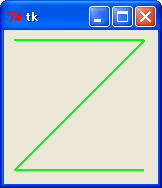 直線の色と太さを変更
オプション smooth を真 (True) に指定すると、滑らかな曲線を描画することができます。
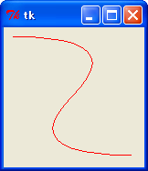 直線の描画(smooth 指定)
このほかにも、矢印の設定や折り返しのときの形など、いろいろなオプションが用意されています。
次は多角形です。五角形を作ってみましょう。各頂点の座標を指定しますが、最初の点と最後の点が結ばれて閉じた図形となります。
リスト：多角形の描画 from Tkinter import * root = Tk() c0 = Canvas(root, width = 150, height = 150) c0.create_polygon(75, 10, 140, 70, 110, 140, 40, 140, 10, 70) c0.pack() root.mainloop()
polygon では、デフォルトで fill オプションが黒、outline は描画されません。それから、line と同様に smooth を真 (True) に指定すると、多角形の角を丸めます。実際に試してみてください。
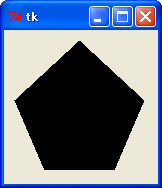 多角形の描画
次は円弧です。楕円の円周の一部分を表示します。座標の指定は oval と同じですが、オプションで表示する範囲を指定します。
角度は度数でプラスが反時計回り、マイナスが時計回りとなります。また、oval と同じオプションが使えます。ただし、style が arc の場合、fill で色を指定しても表示されません。chord か pieslice に変更すると表示されます。
キャンバスはイメージとビットマップも表示することができます。
c0.create_image(x, y, オプション, ... ) c0.create_bitmap(x, y, オプション, ... )
x, y は表示する座標を表します。イメージのどの位置に対応させるかは、オプション anchor で指定します。これは pack() と同じ指定方法です。データとの対応は image と bitmap で指定します。たとえば、earthris.gif (Python/Tkinter 配布パッケージ内のファイル) を表示するには、次のようにプログラムします。
リスト：イメージの表示 from Tkinter import * root = Tk() c0 = Canvas(root, width = 400, height = 300) c0.pack() image_data = PhotoImage(file = 'earthris.gif') c0.create_image(200, 150, image = image_data) root.mainloop()
これでキャンバスの中央にイメージが描画されます。
次は文字列です。当然ですがキャンバスに文字を描くことができます。
c0.create_text(x, y, オプション, ...)
x, y は座標で、オプションには次のものが使えます。
それでは実際に試してみましょう。
リスト：テキストの表示
from Tkinter import *
root = Tk()
c0 = Canvas(root, width = 150, height = 150)
c0.create_text(75, 75, text = 'hello, world!', font = ('FixedSys', 14))
c0.pack()
root.mainloop()
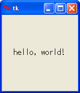 テキストの描画
これでウィンドウの中央に hello, world! が表示されます。
キャンバス中にほかのウィジェットを表示させる場合はメソッド create_window() を使います。
たとえば、ラベルを表示させてみましょう。
リスト：ラベルウィジェットの表示
from Tkinter import *
root = Tk()
c0 = Canvas(root, width = 150, height = 150)
a0 = Label(root, text = 'hello, world!', bg = 'green', font = ('FixedSys', 14))
c0.create_window(75, 75, window = a0)
c0.pack()
root.mainloop()
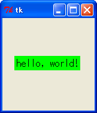 ラベルの描画
今度は背景色が緑の hello, world! が表示されました。
キャンバスで使用できる図形を一通り説明したところで、図形を操作するときによく使うメソッドを示します。
| type(ID) | 図形の種別を返す |
| bbox(ID, ...) | 指定した図形を囲む領域（矩形）をリストにして返す |
| coords(ID, x0, y0, ...) | 図形の座標の設定や問い合わせ |
| delete(ID, ...) | 図形の削除 |
| move(ID, dx, dt) | 図形の移動 |
| tag_lower(ID1, ID2) | 重なり順を低くする |
| tag_raise(ID1, ID2) | 重なり順を高くする |
| tag_bind(ID, eventsequence, callback) | バインディングの設定 |
ウィジェットと同様に、図形に対してもバインディングを設定することができます。これはタグと一緒に詳しく説明します。
キャンバスで作成した図形にはバインディングを設定することができます。簡単な例題として、作成した矩形をドラッグで移動させてみましょう。次のプログラムを実行してください。
リスト：バインディングの設定 (1)
from Tkinter import *
root = Tk()
c0 = Canvas(root, width = 200, height = 150)
c0.pack()
id = c0.create_rectangle(10, 10, 20, 20, fill = 'brown')
# 移動
def move_rect(event):
x = event.x
y = event.y
c0.coords(id, x - 5, y - 5, x + 5, y + 5)
# バインディング
c0.tag_bind(id, '<Button1-Motion>', move_rect)
root.mainloop()
最初に、一辺の長さが 10 の矩形を作ります。次に、その矩形に対してバインディングを設定します。イベント <B1-Motion> は、左ボタンを押した状態でマウスを動かした場合、つまりドラッグに対応します。メソッド tag_bind() で設定されたコールバック関数には、第 1 引数にイベントクラスのオブジェクトが渡されます。関数 move_rect() では、新しい座標を計算してから、図形の位置を coords() で変更します。
それでは、操作する矩形を 3 つに増やしてみましょう。それぞれの矩形にバインディングを設定してもいいのですが、同じようなプログラムをいくつも書くのは面倒です。このような場合、タグ (tag) を設定すると簡単にプログラムを記述することができます。タグには荷札という意味があり、図形に識別子をつける働きをします。
図形には複数のタグを設定することができます。そして、図形を操作するコマンドは、操作対象となる図形の指定を、番号のほかにもタグを使って行うことができるのです。タグの設定は、図形を生成するときにオプション tags で行います。それでは矩形にタグをセットして 3 つ作ります。
リスト：バインディングの設定 (2)
from Tkinter import *
root = Tk()
c0 = Canvas(root, width = 200, height = 150)
c0.pack()
c0.create_rectangle(10, 10, 20, 20, fill = 'brown', tags = 'brown')
c0.create_rectangle(20, 10, 30, 20, fill = 'brown', tags = 'brown')
c0.create_rectangle(30, 10, 40, 20, fill = 'brown', tags = 'brown')
# 移動
def move_rect(event):
x = event.x
y = event.y
c0.coords('current', x - 5, y - 5, x + 5, y + 5)
# バインディング
c0.tag_bind('brown', "<Button1-Motion>", move_rect)
root.mainloop()
タグは文字列で指定します。今回は brown としました。このタグに対してバインディングを設定するので、図形の番号ではなくタグ brown を指定します。ただし、このままでは関数 move_rect() で操作対象となる矩形がわかりません。この場合、特別なタグ current を使います。
current は Python/Tkinter が設定するタグで、マウスカーソルがある図形上にくると、その図形にタグ current を設定し、その図形からマウスカーソルから出るとタグ current を削除します。つまり、マウスカーソルが指している図形はタグ current で指定することができるのです。これで、複数の矩形をひとつの関数で操作することができます。
このほかにも、タグには図形をまとめて操作することができる、という利点があります。たとえば、矩形の色をまとめて変更する場合は、タグを使って行えばいいのです。
co.itemconfigure('brown', fill = 'green')
これでタグ brown の図形の色を green に変更することができます。削除する場合もタグを使えば簡単です。
co.delete('brown')
これでタグ brown の図形をすべて削除することができます。